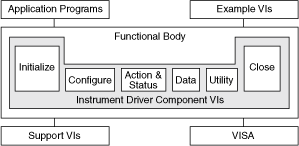

The Instrument Driver VIs are located on the Instrument Drivers palette.
Organization of Instrument Driver
The following illustration shows the organization of a typical instrument driver.

Typical Instrument Driver Components
Most instrument drivers have menu palettes that include the following components.
The Initialize VI, the first instrument driver VI you call, establishes communication with the instrument. Additionally, it can perform any necessary actions to place the instrument in its default power on state or in another specific state. Generally, you need to call the Initialize VI only once at the beginning of an application.
The Configuration, Action, Data, and Utility VIs provide numerous functionalities to control and communicate with the instrument.
The Close VI terminates the software connection to the instrument and frees system resources. Generally, you need to call the Close VI only once at the end of an application or when you finish communication with an instrument. Make sure that for each successful call to the Initialize VI, you use a matching Close VI to avoid maintaining unnecessary memory resources.
Use the NI Example Finder to search or browse for project-style instrument driver examples. You can find non-project style instrument driver examples in the Instrument Drivers palette and subpalettes.
Many instrument drivers have a VI Tree VI you can use to view the entire instrument driver hierarchy. The VI Tree VI is a non-executable VI that illustrates the functional structure of the instrument driver.
You can test instrument driver VIs to interactively determine the appropriate instrument configuration settings.